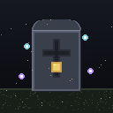
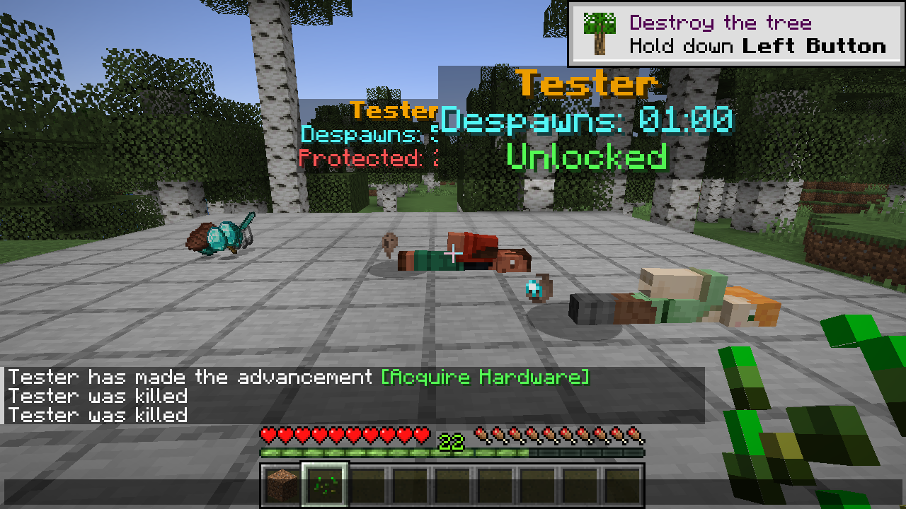
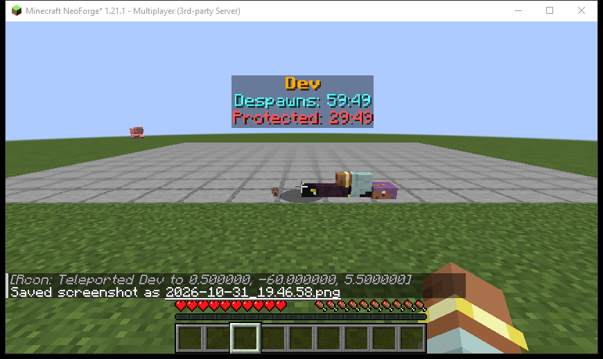
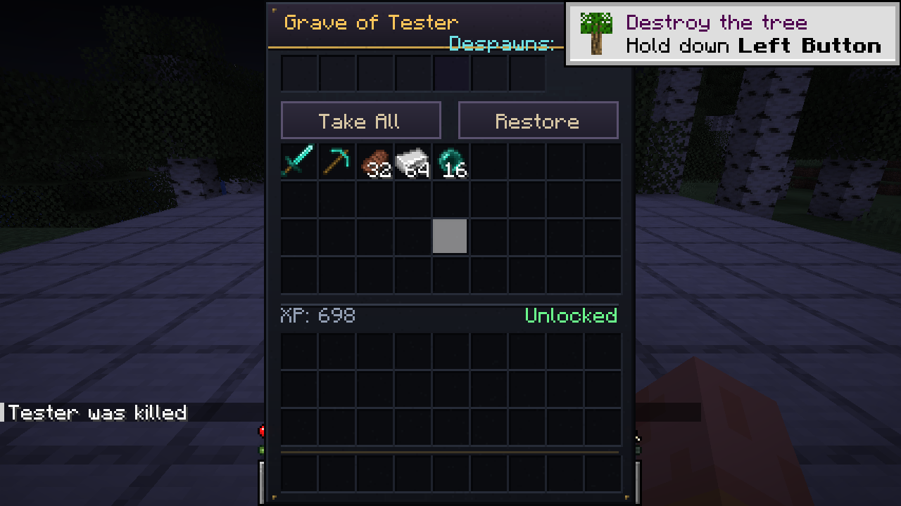
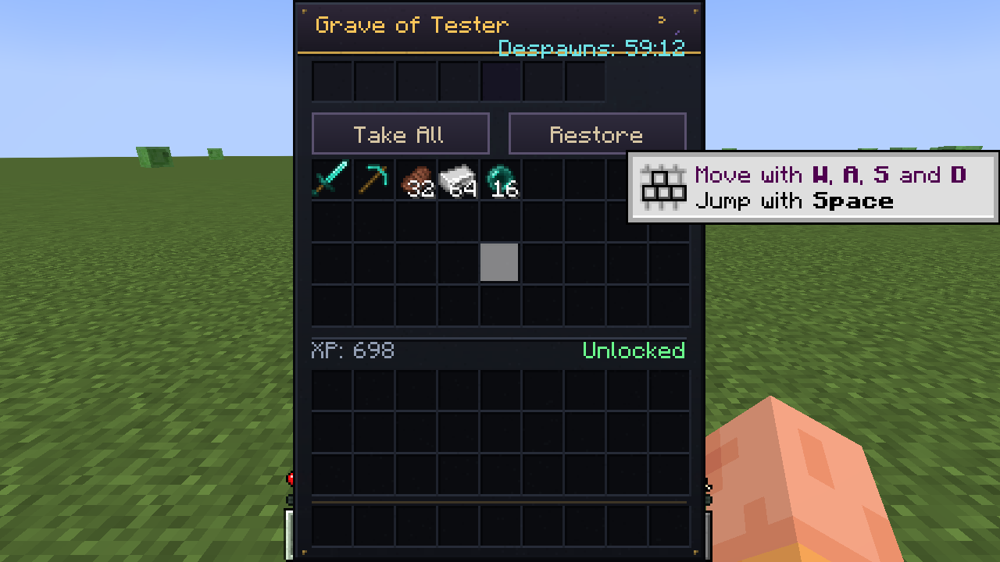

سكين اللاعب الحقيقي
في 26.3 يُستخدم Mannequin من الفانيلا، وفي النسخ الأقدم جسد مخصص يعرض السكين الحية للاعب بدل Steve.

Corpse Gravesمود القبور الآمنة تحميل 1.1.0الإصدار 1.1.0 · Fabric · NeoForge · Forge
عند موت اللاعب تُحفظ كل أغراضه وخبرته داخل قبر محمي، بجسد يعرض سكين اللاعب الحقيقي، وهولوغرام عائم يخبرك بالاسم ومتى يختفي القبر ومتى يُفتح للآخرين.

لقطة من اختبار حقيقي على عميل Forge 1.20.1 — الجسد والهولوغرام والظل.
لماذا Corpse Graves؟
لا صناديق مؤقتة ولا سباق مع الزمن. القبر ينتظرك ويعرض لك كل شيء بوضوح.
في 26.3 يُستخدم Mannequin من الفانيلا، وفي النسخ الأقدم جسد مخصص يعرض السكين الحية للاعب بدل Steve.
صاحب القبر يفتحه دائماً. الآخرون ينتظرون مؤقت الحماية (30 دقيقة افتراضياً)، والمشرفون يمكنهم تجاوزها.
الاسم بالذهبي، عدّاد الاختفاء بالفيروزي، وحالة الحماية بالأحمر أو الأخضر — كلها قابلة للتخصيص.
انقر بالزر الأيمن لفتح واجهة داكنة أنيقة فيها زرّا Take All وRestore مع الأغراض والخبرة.
Shift + كليك يعيد كل غرض إلى خانته الأصلية. ما لا يتسع يبقى في القبر.
المؤقت يتوقف أثناء غياب صاحب القبر وعند إغلاق التشك. القبر يبقى بعد إعادة تشغيل السيرفر.
إذا مات اللاعب في الفراغ، يبحث المود عن سطح آمن قريب ويضع القبر هناك.
مؤقتات، ألوان، ارتفاع الهولوغرام، وضعية الجسد، نسبة الخبرة، الحماية، وإنقاذ الفراغ — كلها في JSON واحد.
من داخل اللعبة
ليست صوراً ترويجية: قبر على منصة اختبار، وجسد من عميل NeoForge 1.21.1، وواجهات من Forge وFabric.



التحميل
ملف واحد لكل بيئة. لا تضع أكثر من نسخة Corpse Graves في مجلد mods.
Loader 0.19.3+ · Java 25
0.165.1+26.4Loader 0.19.3+ · Java 25
0.165.0+26.3Loader 0.19.3+ · Java 25
0.161.0+26.2Loader 0.19.3+ · Java 25
0.155.3+26.1.2Loader 0.19.3+ · Java 25
0.155.3+26.1.2Loader 0.19.3+ · Java 25
0.155.3+26.1.2Loader 0.16+ · Java 21
0.116.17+1.21.1Loader 0.16+ · Java 21
0.102.0+1.21Loader 0.15+ · Java 17
0.92.12+1.20.1Forge 66.1.2+ · Java 25
لا يحتاج موداً آخرForge 65.1.5+ · Java 25
لا يحتاج موداً آخرForge 64.1.5+ · Java 25
لا يحتاج موداً آخرForge 63.0.2+ · Java 25
لا يحتاج موداً آخرForge 62.0.9+ · Java 25
لا يحتاج موداً آخرForge 52.1.20+ · Java 21
لا يحتاج موداً آخرForge 51.0.33+ · Java 21
لا يحتاج موداً آخرForge 47.x · Java 17
لا يحتاج موداً آخرNeoForge 26.3.0.100+ · Java 25
لا يحتاج Fabric APINeoForge 26.2.0.93+ · Java 25
لا يحتاج Fabric APINeoForge 26.1.2.125+ · Java 25
لا يحتاج Fabric APINeoForge 21.1.176+ · Java 21
لا يحتاج Fabric APINeoForge 21.0.167+ · Java 21
لا يحتاج Fabric APINeoForge 47.1.106+ · Java 17
جرة متوافقة مع Forgeروابط Fabric API المباشرة: 0.165.0+26.3 · 0.165.1+26.4 · 0.161.0+26.2 · 0.155.3+26.1.2 · 0.116.17+1.21.1 · 0.102.0+1.21 · 0.92.12+1.20.1.
Fabric وForge وNeoForge في ملف واحد، مناسب لسيرفرات متعددة النسخ أو للاحتفاظ بكل الإصدارات. الحجم حوالي 18 م.ب.
كل ملفات Fabric API مضمَّنة داخل الحزمة الكاملة، وروابطها المفردة أسفل القائمة مباشرة. لا توجد نسخة Forge أو NeoForge لماين كرافت 26.4 لأن أياً منهما لم يصدر لها بعد، ولا نسخ NeoForge لـ26.1 أو 26.1.1. نسخة NeoForge 1.20.1 هي جرة التوافق الثنائي مع فرع NeoForge 47.1.x. اختر الصف المطابق للودر ونسخة اللعبة فقط.
التثبيت
ثبّت المود على العميل لرؤية الجسد والواجهة. وعلى السيرفر ليُحفظ كل شيء للجميع.
mods (ولهذه النسخة: fabric-api-0.165.0+26.3.jar).mods الخاص بالسيرفر.0.116.17 / 0.102.0 / 0.92.12.mods على العميل والسيرفر. الجسد هنا يعرض السكين الحية للاعب.mods على العميل والسيرفر. لا تستخدم جرة Fabric أو NeoForge مع Forge، والعكس صحيح.mods سيسبب خطأ duplicate mod. احتفظ بواحدة فقط.الإعدادات
كل شيء في config/corpsegraves.json على السيرفر أو اللعبة المفردة، ويُطبَّق مباشرة عبر /corpsegraves reload.
{
"despawnSeconds": 3600,
"unlockSeconds": 1800,
"xpRecoveryPercent": 50.0,
"ownedGravesAlwaysAccessible": true,
"hologram": {
"scale": 1.4,
"height": 1.45,
"background": "#66000000",
"nameColor": "#FFAA00",
"despawnColor": "#55FFFF",
"protectedColor": "#FF5555",
"unlockedColor": "#55FF55"
}
}-1 = لا يختفي.0 = مفتوح فوراً، -1 = للمالك فقط.الأوامر
| الأمر | الوظيفة | الصلاحية |
|---|---|---|
/corpsegraves locate | إحداثيات أقرب قبر لك. | الجميع |
/corpsegraves reload | إعادة تحميل ملف JSON بدون إعادة تشغيل. | مشرف |
/corpsegraves unlock <player> | فتح كل قبور لاعب. | مشرف |
/corpsegraves remove <player> | حذف قبور لاعب وإسقاط أغراضه. | مشرف |
الاختبار
النتائج التالية من سيرفرات مخصصة وعملاء حقيقيين خلال بناء الإصدار 1.1.0.
سيرفر إنتاجي + عميل Forge 66.1.2: القبر والهولوغرام، فتح الواجهة، وTake All نقل 3 ستاكات و698 خبرة ثم حذف القبر.
سيرفر 26.3.0.100 + عميل NeoForge: الجسد والسكين والهولوغرام، وواجهة Take All نقلت 3 ستاكات و698 خبرة ثم حُذف القبر.
لعب كامل: الموت، السكين، الهولوغرام، الواجهة، 50% خبرة، الاستعادة، وبقاء القبر بعد إعادة التشغيل.
سيرفر إنتاجي + جسر Vanilla: إنشاء القبر، الهولوغرام، التفاعل، والاستعادة السريعة مع 698 خبرة.
عملاء حقيقيون: الجسد والسكين والهولوغرام، فتح الواجهة، وTake All نقل خمسة ستاكات و698 خبرة.
Neo 47.1.106 + عميل Vanilla: القبر والهولوغرام والهيت بوكس، ثم Take All نقل 3 ستاكات و698 خبرة واختفى القبر.
العميل يتصل، الواجهة والهيت بوكس يعملان، ونقل خمسة ستاكات و698 خبرة ثم حذف القبر.
Fabric 26.1→26.4، وForge 26.1→26.3، وNeoForge 26.1.2→26.3: سيرفرات مخصصة تصل Done وتُنشئ القبور.
في Forge 1.20.1 وFabric 26.3: القبر والهولوغرام والمؤقتات تعود كما هي بعد restart للسيرفر.
فُحصت الواجهة والجسد بصرياً على عملاء حقيقيين: Fabric 26.3 و1.21.1 و1.20.1، وForge 26.3 و1.20.1، وNeoForge 26.3 و1.21.1. جُرِّب NeoForge 1.20.1 بعميل Vanilla: القبر ثم أخذ كل الأغراض و698 خبرة. بقية نسخ 26.x جُرِّبت على سيرفرات مخصصة (Done + إنشاء قبور) دون فحص بصري كامل. المشروع مفتوح المصدر برخصة MIT؛ لأي مشكلة افتح Issue في مستودع GitHub.
جاهز للموت القادم